SOC109 · Emotet Malware Detected
- Categoria
- Malware
- Caso
- SOC109
- Registro
- Host isolado
Resumo
Triagem de um alerta sobre atividade associada a Emotet.
Passo a passo da investigação
Abertura do chamado
Primeiro, foi aberto um chamado para registrar o incidente.
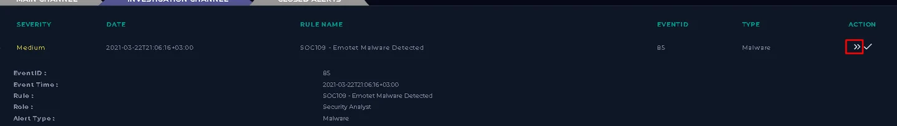
Pesquisa dos indicadores
Reunimos as informações disponíveis e pesquisamos os indicadores no VirusTotal e no Endpoint Security.
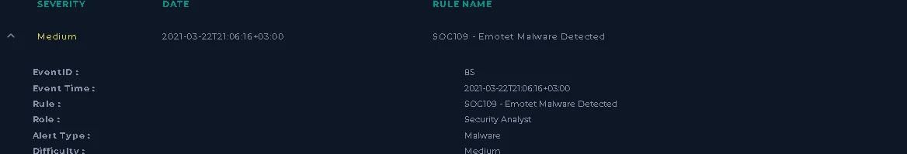
Pesquisamos no VirusTotal o hash
349d13ca99ab03869548d75b99e5a1d0. O resultado indicou que o
arquivo é malicioso.
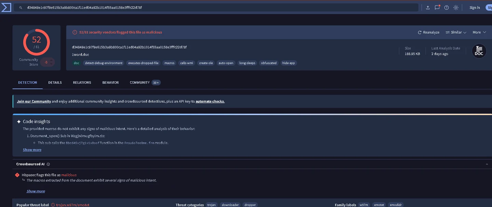
Análise do endpoint
Pesquisamos o computador no Endpoint Security pelo endereço IP
172.16.17.45. Também é possível localizá-lo pelo nome
RichardPRD.
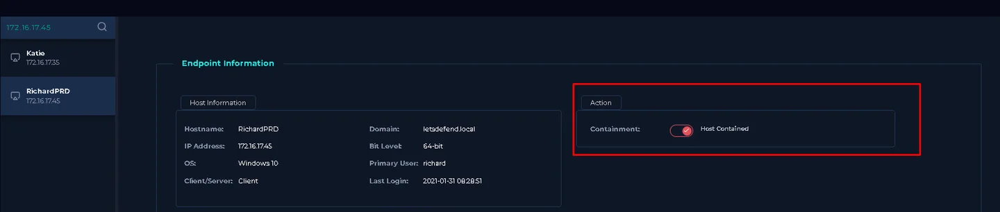
Durante a análise, identificamos várias ações suspeitas nos processos executados nessa máquina.
Análise dos registros
Consultamos no Log Management os registros associados ao endereço IP
172.16.17.45.
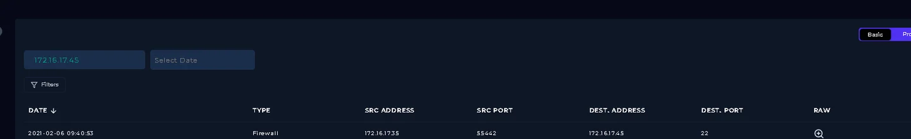
Verificamos que o firewall bloqueou a tentativa relacionada ao arquivo. Por esse motivo, o computador foi colocado em quarentena.
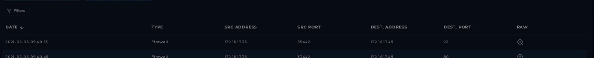
Também analisamos no VirusTotal a URL registrada no Log Management.
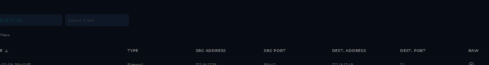
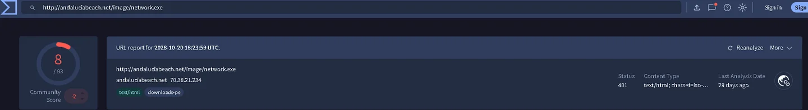
Playbook
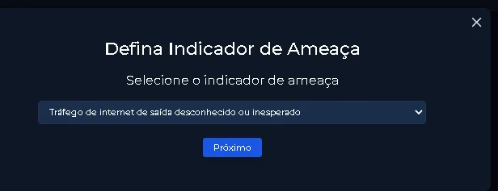
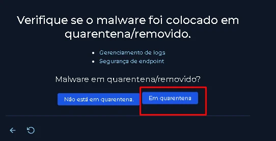
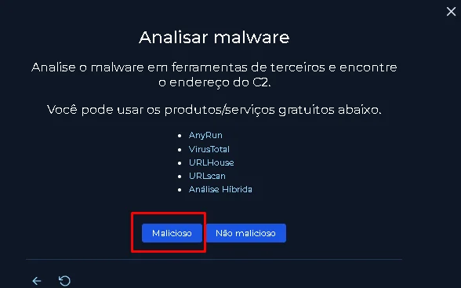
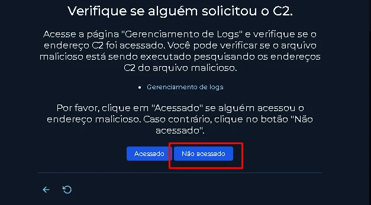
Resumo da análise
A análise no VirusTotal indicou que a URL [URL omitida]
e o arquivo identificado pelo hash
349d13ca99ab03869548d75b99e5a1d0 são maliciosos. Os
registros do Log Management mostram que o computador com o endereço IP
172.16.17.45 tentou abrir um arquivo malicioso com extensão
.doc. O firewall bloqueou a tentativa, e o computador foi
devidamente isolado.
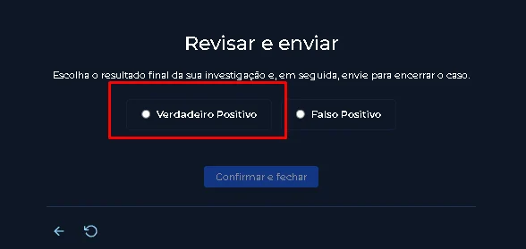
Minha dica: padronize seu playbook usando: - URLs:
[URL omitida] - IPs: 192[.]168[.]1[.]10 -
Hashes: mantenha em formato de código, entre crases.
Exercício simulado. Algumas capturas foram recortadas ou tiveram campos ocultados.